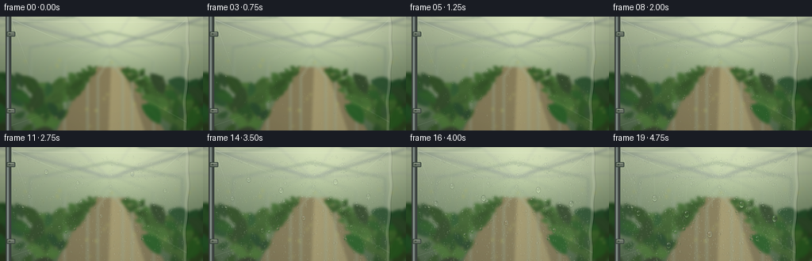
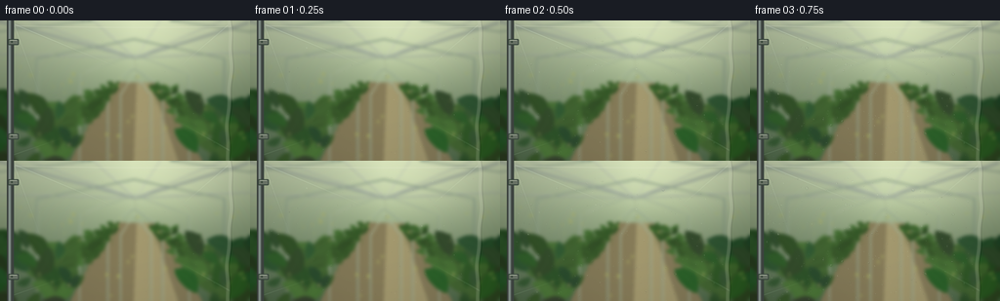

CODING AGENTS AS PIXEL WORLD MODELS
traex/GPT-6.1-Sol · phygen_105
点击播放 · 原生 RGB 像素
逐轮保存的候选
回放视频、检查图与代码变化。
每份候选均可单独播放。实际图片检查记录在下方工具轨迹中。
候选 01播放与检查图
点击播放 · 原生 RGB 像素


展开代码变化
--- 上一保存版本
+++ 本次保存版本
@@ -0,0 +1,293 @@
+"""Procedurally render condensation on a flexible greenhouse plastic sheet."""
+from pathlib import Path
+import json
+import math
+import numpy as np
+from PIL import Image, ImageDraw, ImageFilter
+from scipy.ndimage import gaussian_filter, map_coordinates
+from scipy.spatial import cKDTree
+import artifact_io
+
+ROOT=Path(__file__).resolve().parent
+SPEC=json.loads((ROOT/'task_spec.json').read_text())
+W,H=SPEC['width'],SPEC['height']
+S=3
+WW,HH=W*S,H*S
+rng=np.random.default_rng(1057)
+
+def smooth(a,b,t):
+ u=np.clip((t-a)/(b-a),0,1)
+ return u*u*(3-2*u)
+
+def poly(draw, pts, color):
+ draw.polygon([(int(x*S),int(y*S)) for x,y in pts],fill=color)
+
+def line(draw,pts,color,width=1):
+ draw.line([(int(x*S),int(y*S)) for x,y in pts],fill=color,width=max(1,round(width*S)),joint='curve')
+
+def leaf(draw,x,y,length,ang,width,color):
+ axis=np.array([np.cos(ang),np.sin(ang)])
+ perp=np.array([-axis[1],axis[0]])
+ origin=np.array([x,y])
+ points=[]
+ for side in (1,-1):
+ us=np.linspace(0,1,15) if side==1 else np.linspace(1,0,15)
+ for u in us:
+ p=origin+axis*length*u+perp*(np.sin(np.pi*u)**.78*width*side+np.sin(np.pi*u)*length*.10)
+ points.append(p)
+ poly(draw,points,color)
+ mid=origin+axis*length+perp*length*.01
+ col=tuple(min(255,int(c*1.12+9)) for c in color)
+ line(draw,[origin,origin+axis*length*.5+perp*length*.11,mid],col,.34)
+
+# Greenhouse scene: sunlit translucent roof, repeated structural ribs,
+# vegetable foliage on both sides of a narrow warm earthy aisle.
+yy,xx=np.mgrid[0:HH,0:WW].astype(float)
+x=xx/S;y=yy/S
+sky=np.empty((HH,WW,3),float)
+v=np.clip(y/144,0,1)
+for c,top,bottom in [(0,203,77),(1,216,106),(2,178,71)]:
+ sky[:,:,c]=top*(1-v)+bottom*v
+sun=np.exp(-((x-166)**2/(2*48**2)+(y-24)**2/(2*32**2)))
+sky+=sun[:,:,None]*np.array([31,29,23])
+im=Image.fromarray(np.uint8(np.clip(sky,0,255)))
+d=ImageDraw.Draw(im)
+poly(d,[(113,63),(160,64),(207,144),(72,144)],(137,125,88))
+poly(d,[(140,63),(155,65),(182,144),(137,144)],(169,157,112))
+# Long overhead rail, roof facets and metal struts.
+for a,b in [([(0,1),(138,38),(255,2)],3), ([(0,34),(138,38),(256,32)],1.5), ([(30,0),(138,38),(227,0)],1.2), ([(96,0),(138,38),(164,0)],1.0)]:
+ line(d,a,(148,161,148),b)
+ line(d,[(px+.6,py-.65) for px,py in a],(232,237,210),.65)
+for xleft,xright,top in [(-22,274,-6),(38,230,19),(81,193,35),(110,166,49),(123,154,56)]:
+ line(d,[(xleft,144),(xleft,top+20),(137,top),(xright,top+20),(xright,144)],(119,141,123),1.6 if top<30 else .75)
+ line(d,[(xleft+.8,144),(xleft+.8,top+20),(137,top-.7),(xright+.8,top+20),(xright+.8,144)],(197,210,177),.5)
+line(d,[(137,38),(142,69)],(167,179,143),.8)
+# Layered plants, distant to near. Leaves use individual curved silhouettes.
+for depth in np.linspace(.13,1,12):
+ basey=67+depth*85
+ for side in [-1,1]:
+ basex=138+side*(13+82*depth)+rng.normal(0,8*depth)
+ scale=.22+depth
+ stem_top=basey-(27+15*rng.random())*scale
+ line(d,[(basex,basey+9),(basex-3*side,stem_top)],(77,101,47),1.1*scale)
+ for k in range(8):
+ ly=stem_top+k*(basey-stem_top)/8
+ lx=basex-3*side*(1-k/8)
+ direction=(-1 if k%2 else 1)
+ ang=-np.pi/2+direction*rng.uniform(.60,1.30)
+ length=rng.uniform(14,27)*scale
+ shade=rng.uniform(.75,1.22)
+ color=(int(49*shade+16*depth),int(90*shade+16*depth),int(35*shade+10*depth))
+ leaf(d,lx,ly,length,ang,length*.23,color)
+# Larger near-edge leaves add depth but remain out of focus.
+for side in [0,1]:
+ for k in range(34):
+ lx=rng.uniform(-22,73) if not side else rng.uniform(196,280)
+ ly=rng.uniform(90,161)
+ length=rng.uniform(16,37)
+ color=tuple(int(a*rng.uniform(.75,1.15)) for a in (45,86,39))
+ leaf(d,lx,ly,length,rng.uniform(-2.8,-.3),length*.25,color)
+# Sun flecks in foliage, optically blurred.
+for k in range(42):
+ bx=rng.uniform(10,252);by=rng.uniform(47,139)
+ rad=rng.uniform(.3,1.4)
+ d.ellipse(((bx-rad)*S,(by-rad)*S,(bx+rad)*S,(by+rad)*S),fill=(180,185,100))
+im=im.filter(ImageFilter.GaussianBlur(1.7*S))
+bg=np.asarray(im).astype(float)
+# Subtle large-scale interior illumination.
+bg*= (1-.14*(np.clip(abs(x-136)/144,0,1))-.06*y/144)[:,:,None]
+
+# Transparent polyethylene sheet attached to the left upright. The right edge
+# is a slightly loose fold, not a rigid glazing panel.
+right=236+1.9*np.sin(y*.040)+.65*np.sin(y*.16)
+sheet=smooth(9,13,x)*(1-smooth(right-1,right+1,x))
+base=bg.copy()
+veil=np.clip(.045+.019*np.sin(x*.031+y*.008)+.013*np.cos(y*.020),.018,.10)*sheet
+base=base*(1-veil[:,:,None])+np.array([215,227,206])*veil[:,:,None]
+# Strained triangular folds, deliberately sparse and soft.
+crease=np.zeros((HH,WW));crease_dark=np.zeros((HH,WW))
+for anchor,end,width,strength in [((15,4),(133,53),.47,.20),((15,6),(47,93),.39,.15),((233,5),(177,53),.48,.13),((238,135),(180,102),.66,.18),((13,138),(71,118),.51,.15)]:
+ ax,ay=anchor; bx,by=end
+ vx=bx-ax;vy=by-ay
+ u=np.clip(((x-ax)*vx+(y-ay)*vy)/(vx*vx+vy*vy),0,1)
+ dist=((x-(ax+u*vx))**2+(y-(ay+u*vy))**2)**.5
+ fall=(1-u)**1.5
+ crease+=np.exp(-(dist/width)**2)*fall*strength
+ crease_dark+=np.exp(-((dist-1.0)/(width*1.6))**2)*fall*strength*.4
+base+=crease[:,:,None]*np.array([115,126,126])*sheet[:,:,None]
+base-=crease_dark[:,:,None]*np.array([50,51,42])*sheet[:,:,None]
+# Edge double fold, narrow highlight and milky two-layer material.
+fold=np.exp(-((x-(right-2.0))/1.3)**2)*.21+np.exp(-((x-right)/.30)**2)*.40
+base=base*(1-fold[:,:,None])+np.array([228,231,207])*fold[:,:,None]
+base-=np.exp(-((x-(right+.6))/.39)**2)[:,:,None]*np.array([27,30,23])
+# Top hem follows a gentle drape.
+topline=5+2.0*np.sin(x/90)
+hem=np.exp(-((y-topline)/.45)**2)*sheet
+base=base*(1-hem[:,:,None]*.28)+np.array([239,242,217])*hem[:,:,None]*.28
+
+# A stationary, subtle surface microtexture. This is plastic, not a pane of glass.
+texture=rng.normal(0,.30,(HH,WW))
+base+=texture[:,:,None]*sheet[:,:,None]
+base=np.clip(base,0,255)
+
+# Nucleation sites. Condensation grows continuously, and contacting beads
+# merge with conserved volume; larger beads depin and slide under gravity.
+N=1750
+px=rng.uniform(17,231,N);py=rng.uniform(11,148,N)
+birth=rng.uniform(.05,3.9,N)
+rate=rng.lognormal(-1.2,.72,N)
+rate=np.minimum(rate,1.6)
+# Predisposed larger wet spots lead to a few readable coalescence/run events.
+hero=[(58,28,.12,5.3),(98,45,.32,5.0),(167,30,.25,5.6),(208,55,.48,5.1),(127,87,.75,4.9),(75,102,.4,4.1),(187,101,.5,3.8),(37,62,.7,4.6)]
+for k,(hx,hy,hb,hr) in enumerate(hero):
+ px[k]=hx;py[k]=hy;birth[k]=hb;rate[k]=hr
+vol=np.zeros(N);alive=np.zeros(N,bool);moving=np.zeros(N,bool)
+track=[[] for _ in range(N)]
+# A few microscopic nuclei already present in the first frame.
+birth[20:70]=rng.uniform(-.20,.0,50)
+vol[20:70]=rng.uniform(.005,.035,50)
+next_id=N
+
+# Refraction renderer: a shallow lens, dark Fresnel rim, a roof catchlight,
+# and the caustic crescent underneath. No opaque white disks.
+def drop(img,source,cx,cy,r,elong=1.0):
+ rx=r*S;ry=r*S*elong
+ x0=max(0,int((cx-r*1.18)*S));x1=min(WW,int((cx+r*1.18)*S)+2)
+ y0=max(0,int((cy-r*elong*1.18)*S));y1=min(HH,int((cy+r*elong*1.18)*S)+2)
+ if x1<=x0 or y1<=y0 or r<.12:return
+ gy,gx=np.mgrid[y0:y1,x0:x1]
+ u=(gx-cx*S)/rx;v=(gy-cy*S)/ry
+ q=np.sqrt(u*u+v*v)
+ coverage=np.clip((1-q)*min(rx,ry)+.5,0,1)
+ if not np.any(coverage):return
+ z=np.sqrt(np.maximum(0,1-np.minimum(q,1)**2))
+ # Opposite-side image through curved water, preserving environmental color.
+ mag=1.50+.65*z
+ sx=np.clip(cx*S-u*rx*mag,0,WW-1)
+ sy=np.clip(cy*S-v*ry*mag-1.15*S*z,0,HH-1)
+ ix=sx.astype(int);iy=sy.astype(int)
+ refr=source[iy,ix].copy()
+ rim=np.exp(-((q-.91)/.075)**2)
+ bottom=np.exp(-((q-.75)/.13)**2)*np.clip(v+.2,0,1)
+ top=np.exp(-((q-.82)/.080)**2)*np.clip(-v-.08,0,1)
+ refr*= (1-.25*rim-.08*np.clip(v,0,1))[:,:,None]
+ refr+=bottom[:,:,None]*np.array([52,63,50])
+ refr=refr*(1-top[:,:,None]*.47)+np.array([226,241,223])*top[:,:,None]*.47
+ # Focused upper-left sunlight reflection: smaller than bead, visibly wet.
+ spec=np.exp(-(((u+.33)/.15)**2+((v+.42)/.12)**2)*1.3)
+ spec2=np.exp(-(((u+.15)/.32)**2+((v+.58)/.07)**2))*0.28
+ highlight=np.clip(spec*.90+spec2,0,.96)
+ refr=refr*(1-highlight[:,:,None])+np.array([253,255,242])*highlight[:,:,None]
+ # Meniscus darkening and a mild displaced shadow immediately below.
+ shadow=np.exp(-((q-1.03)/.08)**2)*np.clip(v,0,1)*.13
+ patch=img[y0:y1,x0:x1]
+ patch*=1-shadow[:,:,None]
+ patch[:]=patch*(1-coverage[:,:,None])+np.clip(refr,0,255)*coverage[:,:,None]
+
+# Render transparent rivulets, as fine irregular glossy channels on the sheet.
+def trails_image(t):
+ m=Image.new('L',(WW,HH),0);md=ImageDraw.Draw(m)
+ rim=Image.new('L',(WW,HH),0);rd=ImageDraw.Draw(rim)
+ for k,pts in enumerate(track):
+ if len(pts)<2:continue
+ recent=[]
+ for tx,ty,tt,tr in pts:
+ age=t-tt
+ if age<3.2:
+ recent.append((tx,ty,tt,tr))
+ if len(recent)<2:continue
+ for a,b in zip(recent[:-1],recent[1:]):
+ age=t-b[2]
+ strength=int(130*math.exp(-age/4))
+ tw=max(.40,min(1.50,b[3]*.30))
+ coords=[(a[0]*S,a[1]*S),(b[0]*S,b[1]*S)]
+ md.line(coords,fill=strength,width=max(1,int(tw*S)),joint='curve')
+ rd.line([(c[0]-.38*S,c[1]) for c in coords],fill=int(strength*.55),width=1)
+ wet=np.asarray(m).astype(float)/255
+ edge=np.asarray(rim).astype(float)/255
+ wet=gaussian_filter(wet,.36*S)
+ return wet,edge
+
+frames=[]
+lastt=0
+for fi in range(SPEC['frames']):
+ t=fi/SPEC['fps']
+ steps=max(1,int(round((t-lastt)/.025)))
+ dt=(t-lastt)/steps if t>lastt else 0
+ for j in range(steps):
+ now=lastt+(j+1)*dt
+ born=(birth<=now)&(~alive)&(vol==0)
+ alive[born]=True;vol[born]=.002
+ alive[(birth<=now)&(vol>0)]=True
+ vol[alive]+=rate[alive]*dt
+ rr=np.cbrt(vol)
+ # Low hysteresis keeps normal beads pinned while only large drops move.
+ moving|=alive&(rr>2.32)
+ idx=np.flatnonzero(alive)
+ if len(idx)>1:
+ tree=cKDTree(np.column_stack([px[idx],py[idx]]))
+ for ia,ib in tree.query_pairs(float(2*max(rr[idx]))):
+ a=idx[ia];b=idx[ib]
+ if not alive[a] or not alive[b]:continue
+ rad1=vol[a]**(1/3);rad2=vol[b]**(1/3)
+ if (px[a]-px[b])**2+(py[a]-py[b])**2 < (.86*(rad1+rad2))**2:
+ # Larger drops swallow small neighbors; mass is conserved.
+ if vol[a]<vol[b]:a,b=b,a
+ total=vol[a]+vol[b]
+ if not moving[a]:
+ px[a]=(px[a]*vol[a]+px[b]*vol[b])/total
+ py[a]=(py[a]*vol[a]+py[b]*vol[b])/total
+ vol[a]=total;vol[b]=0;alive[b]=False;birth[b]=100
+ moving[a]|=moving[b]
+ rate[a]+=rate[b]*.16
+ rr=np.cbrt(vol)
+ moving|=alive&(rr>2.32)
+ for k in np.flatnonzero(alive&moving):
+ speed=8+17*max(0,rr[k]-2.25)
+ px[k]+=.12*np.sin(py[k]*.29+k)*speed*dt
+ py[k]+=speed*dt
+ if len(track[k])==0 or py[k]-track[k][-1][1]>.65:
+ track[k].append((px[k],py[k],now,rr[k]))
+ if py[k]>H+rr[k]*2:
+ alive[k]=False;vol[k]=0;birth[k]=100
+ lastt=t
+ wet,edges=trails_image(t)
+ # Initial vapor is invisible in bulk, with a very faint warm mist drifting
+ # across the humid interior. Fine surface condensation makes the sheet haze.
+ haze=(.006+.068*smooth(.3,4.7,t))*sheet
+ haze*=1-wet*.90
+ fog=(np.exp(-((x-(76+t*7))**2/(2*76**2)+(y-(121-t*4))**2/(2*29**2)))*.025*(.5+.5*np.sin(t*.70+.5)))*sheet
+ h=haze+fog
+ scene=base*(1-h[:,:,None])+np.array([205,219,202])*h[:,:,None]
+ # Wet streaks are optically clearer; sheen lies to one side of their channel.
+ scene=scene*(1-wet[:,:,None]*.065)+np.array([198,218,194])*wet[:,:,None]*.065
+ scene+=edges[:,:,None]*np.array([53,59,49])
+ optical=scene.copy()
+ for k in sorted(np.flatnonzero(alive),key=lambda z:vol[z],reverse=True):
+ if py[k]<4 or px[k]<15 or px[k]>234:continue
+ radius=vol[k]**(1/3)
+ # A gravity-loaded bead has a bottom-heavy elongated silhouette.
+ elong=1+.15*smooth(1.3,3.0,radius)+(.15 if moving[k] else 0)
+ drop(scene,optical,px[k],py[k],radius,elong)
+ # Foreground steel support and small padded clips: outside the wet surface.
+ tube=Image.fromarray(np.uint8(np.clip(scene,0,255)))
+ td=ImageDraw.Draw(tube)
+ for column in range(7*S,14*S):
+ u=(column/S-7)/7
+ value=55+99*np.exp(-((u-.38)/.20)**2)+17*u
+ td.line([(column,0),(column,HH)],fill=(int(value*.91),int(value),int(value*.95)),width=1)
+ line(td,[(14,0),(14,144)],(55,74,62),.4)
+ for cy in [22,119]:
+ # Flat plastic spring fastener holding the sheet to the greenhouse frame.
+ td.rounded_rectangle((8*S,(cy-3)*S,19*S,(cy+3)*S),radius=int(1.3*S),fill=(109,119,106),outline=(58,73,62),width=1*S)
+ line(td,[(10,cy-2),(17,cy-2)],(191,200,178),.5)
+ td.ellipse((11*S,(cy-.8)*S,13*S,(cy+.8)*S),fill=(61,75,62))
+ # Natural lens falloff and extremely fine stationary grain.
+ arr=np.asarray(tube).astype(float)
+ vign=1-.075*((x-134)/167)**2-.055*((y-70)/106)**2
+ arr*=vign[:,:,None]
+ final=Image.fromarray(np.uint8(np.clip(arr,0,255))).resize((W,H),Image.Resampling.LANCZOS)
+ frames.append(np.asarray(final))
+ print(f'frame {fi:02d}: {np.sum(alive)} beads; {np.sum(alive&moving)} sliding',flush=True)
+artifact_io.save(np.stack(frames).astype(np.uint8),ROOT)
+print('Saved RGB video artifacts.',flush=True)
可观测工具轨迹
实际执行的命令与返回图片。
命令 1exit 0
/bin/bash -lc "pwd && ls -la && cat prompt.txt && printf '\\n---RULES---\\n' && cat GENERATION_RULES.md && printf '\\n---SPEC---\\n' && cat task_spec.json"
命令 2exit 0
/bin/bash -lc "cat artifact_io.py && python - <<'PY' import importlib.util for m in ['numpy','PIL','scipy']: print(m, bool(importlib.util.find_spec(m))) PY"
命令 3exit 0
/bin/bash -lc "cat > generate.py <<'PY'
\"\"\"Procedurally render condensation on a flexible greenhouse plastic sheet.\"\"\"
from pathlib import Path
import json
import math
import numpy as np
from PIL import Image, ImageDraw, ImageFilter
from scipy.ndimage import gaussian_filter, map_coordinates
from scipy.spatial import cKDTree
import artifact_io
ROOT=Path(__file__).resolve().parent
SPEC=json.loads((ROOT/'task_spec.json').read_text())
W,H=SPEC['width'],SPEC['height']
S=3
WW,HH=W*S,H*S
rng=np.random.default_rng(1057)
def smooth(a,b,t):
u=np.clip((t-a)/(b-a),0,1)
return u*u*(3-2*u)
def poly(draw, pts, color):
draw.polygon([(int(x*S),int(y*S)) for x,y in pts],fill=color)
def line(draw,pts,color,width=1):
draw.line([(int(x*S),int(y*S)) for x,y in pts],fill=color,width=max(1,round(width*S)),joint='curve')
def leaf(draw,x,y,length,ang,width,color):
axis=np.array([np.cos(ang),np.sin(ang)])
perp=np.array([-axis[1],axis[0]])
origin=np.array([x,y])
points=[]
for side in (1,-1):
us=np.linspace(0,1,15) if side==1 else np.linspace(1,0,15)
for u in us:
p=origin+axis*length*u+perp*(np.sin(np.pi*u)**.78*width*side+np.sin(np.pi*u)*length*.10)
points.append(p)
poly(draw,points,color)
mid=origin+axis*length+perp*length*.01
col=tuple(min(255,int(c*1.12+9)) for c in color)
line(draw,[origin,origin+axis*length*.5+perp*length*.11,mid],col,.34)
# Greenhouse scene: sunlit translucent roof, repeated structural ribs,
# vegetable foliage on both sides of a narrow warm earthy aisle.
yy,xx=np.mgrid[0:HH,0:WW].astype(float)
x=xx/S;y=yy/S
sky=np.empty((HH,WW,3),float)
v=np.clip(y/144,0,1)
for c,top,bottom in [(0,203,77),(1,216,106),(2,178,71)]:
sky[:,:,c]=top*(1-v)+bottom*v
sun=np.exp(-((x-166)**2/(2*48**2)+(y-24)**2/(2*32**2)))
sky+=sun[:,:,None]*np.array([31,29,23])
im=Image.fromarray(np.uint8(np.clip(sky,0,255)))
d=ImageDraw.Draw(im)
poly(d,[(113,63),(160,64),(207,144),(72,144)],(137,125,88))
poly(d,[(140,63),(155,65),(182,144),(137,144)],(169,157,112))
# Long overhead rail, roof facets and metal struts.
for a,b in [([(0,1),(138,38),(255,2)],3), ([(0,34),(138,38),(256,32)],1.5), ([(30,0),(138,38),(227,0)],1.2), ([(96,0),(138,38),(164,0)],1.0)]:
line(d,a,(148,161,148),b)
line(d,[(px+.6,py-.65) for px,py in a],(232,237,210),.65)
for xleft,xright,top in [(-22,274,-6),(38,230,19),(81,193,35),(110,166,49),(123,154,56)]:
line(d,[(xleft,144),(xleft,top+20),(137,top),(xright,top+20),(xright,144)],(119,141,123),1.6 if top<30 else .75)
line(d,[(xleft+.8,144),(xleft+.8,top+20),(137,top-.7),(xright+.8,top+20),(xright+.8,144)],(197,210,177),.5)
line(d,[(137,38),(142,69)],(167,179,143),.8)
# Layered plants, distant to near. Leaves use individual curved silhouettes.
for depth in np.linspace(.13,1,12):
basey=67+depth*85
for side in [-1,1]:
basex=138+side*(13+82*depth)+rng.normal(0,8*depth)
scale=.22+depth
stem_top=basey-(27+15*rng.random())*scale
line(d,[(basex,basey+9),(basex-3*side,stem_top)],(77,101,47),1.1*scale)
for k in range(8):
ly=stem_top+k*(basey-stem_top)/8
lx=basex-3*side*(1-k/8)
direction=(-1 if k%2 else 1)
ang=-np.pi/2+direction*rng.uniform(.60,1.30)
length=rng.uniform(14,27)*scale
shade=rng.uniform(.75,1.22)
color=(int(49*shade+16*depth),int(90*shade+16*depth),int(35*shade+10*depth))
leaf(d,lx,ly,length,ang,length*.23,color)
# Larger near-edge leaves add depth but remain out of focus.
for side in [0,1]:
for k in range(34):
lx=rng.uniform(-22,73) if not side else rng.uniform(196,280)
ly=rng.uniform(90,161)
length=rng.uniform(16,37)
color=tuple(int(a*rng.uniform(.75,1.15)) for a in (45,86,39))
leaf(d,lx,ly,length,rng.uniform(-2.8,-.3),length*.25,color)
# Sun flecks in foliage, optically blurred.
for k in range(42):
bx=rng.uniform(10,252);by=rng.uniform(47,139)
rad=rng.uniform(.3,1.4)
d.ellipse(((bx-rad)*S,(by-rad)*S,(bx+rad)*S,(by+rad)*S),fill=(180,185,100))
im=im.filter(ImageFilter.GaussianBlur(1.7*S))
bg=np.asarray(im).astype(float)
# Subtle large-scale interior illumination.
bg*= (1-.14*(np.clip(abs(x-136)/144,0,1))-.06*y/144)[:,:,None]
# Transparent polyethylene sheet attached to the left upright. The right edge
# is a slightly loose fold, not a rigid glazing panel.
right=236+1.9*np.sin(y*.040)+.65*np.sin(y*.16)
sheet=smooth(9,13,x)*(1-smooth(right-1,right+1,x))
base=bg.copy()
veil=np.clip(.045+.019*np.sin(x*.031+y*.008)+.013*np.cos(y*.020),.018,.10)*sheet
base=base*(1-veil[:,:,None])+np.array([215,227,206])*veil[:,:,None]
# Strained triangular folds, deliberately sparse and soft.
crease=np.zeros((HH,WW));crease_dark=np.zeros((HH,WW))
for anchor,end,width,strength in [((15,4),(133,53),.47,.20),((15,6),(47,93),.39,.15),((233,5),(177,53),.48,.13),((238,135),(180,102),.66,.18),((13,138),(71,118),.51,.15)]:
ax,ay=anchor; bx,by=end
vx=bx-ax;vy=by-ay
u=np.clip(((x-ax)*vx+(y-ay)*vy)/(vx*vx+vy*vy),0,1)
dist=((x-(ax+u*vx))**2+(y-(ay+u*vy))**2)**.5
fall=(1-u)**1.5
crease+=np.exp(-(dist/width)**2)*fall*strength
crease_dark+=np.exp(-((dist-1.0)/(width*1.6))**2)*fall*strength*.4
base+=crease[:,:,None]*np.array([115,126,126])*sheet[:,:,None]
base-=crease_dark[:,:,None]*np.array([50,51,42])*sheet[:,:,None]
# Edge double fold, narrow highlight and milky two-layer material.
fold=np.exp(-((x-(right-2.0))/1.3)**2)*.21+np.exp(-((x-right)/.30)**2)*.40
base=base*(1-fold[:,:,None])+np.array([228,231,207])*fold[:,:,None]
base-=np.exp(-((x-(right+.6))/.39)**2)[:,:,None]*np.array([27,30,23])
# Top hem follows a gentle drape.
topline=5+2.0*np.sin(x/90)
hem=np.exp(-((y-topline)/.45)**2)*sheet
base=base*(1-hem[:,:,None]*.28)+np.array([239,242,217])*hem[:,:,None]*.28
# A stationary, subtle surface microtexture. This is plastic, not a pane of glass.
texture=rng.normal(0,.30,(HH,WW))
base+=texture[:,:,None]*sheet[:,:,None]
base=np.clip(base,0,255)
# Nucleation sites. Condensation grows continuously, and contacting beads
# merge with conserved volume; larger beads depin and slide under gravity.
N=1750
px=rng.uniform(17,231,N);py=rng.uniform(11,148,N)
birth=rng.uniform(.05,3.9,N)
rate=rng.lognormal(-1.2,.72,N)
rate=np.minimum(rate,1.6)
# Predisposed larger wet spots lead to a few readable coalescence/run events.
hero=[(58,28,.12,5.3),(98,45,.32,5.0),(167,30,.25,5.6),(208,55,.48,5.1),(127,87,.75,4.9),(75,102,.4,4.1),(187,101,.5,3.8),(37,62,.7,4.6)]
for k,(hx,hy,hb,hr) in enumerate(hero):
px[k]=hx;py[k]=hy;birth[k]=hb;rate[k]=hr
vol=np.zeros(N);alive=np.zeros(N,bool);moving=np.zeros(N,bool)
track=[[] for _ in range(N)]
# A few microscopic nuclei already present in the first frame.
birth[20:70]=rng.uniform(-.20,.0,50)
vol[20:70]=rng.uniform(.005,.035,50)
next_id=N
# Refraction renderer: a shallow lens, dark Fresnel rim, a roof catchlight,
# and the caustic crescent underneath. No opaque white disks.
def drop(img,source,cx,cy,r,elong=1.0):
rx=r*S;ry=r*S*elong
x0=max(0,int((cx-r*1.18)*S));x1=min(WW,int((cx+r*1.18)*S)+2)
y0=max(0,int((cy-r*elong*1.18)*S));y1=min(HH,int((cy+r*elong*1.18)*S)+2)
if x1<=x0 or y1<=y0 or r<.12:return
gy,gx=np.mgrid[y0:y1,x0:x1]
u=(gx-cx*S)/rx;v=(gy-cy*S)/ry
q=np.sqrt(u*u+v*v)
coverage=np.clip((1-q)*min(rx,ry)+.5,0,1)
if not np.any(coverage):return
z=np.sqrt(np.maximum(0,1-np.minimum(q,1)**2))
# Opposite-side image through curved water, preserving environmental color.
mag=1.50+.65*z
sx=np.clip(cx*S-u*rx*mag,0,WW-1)
sy=np.clip(cy*S-v*ry*mag-1.15*S*z,0,HH-1)
ix=sx.astype(int);iy=sy.astype(int)
refr=source[iy,ix].copy()
rim=np.exp(-((q-.91)/.075)**2)
bottom=np.exp(-((q-.75)/.13)**2)*np.clip(v+.2,0,1)
top=np.exp(-((q-.82)/.080)**2)*np.clip(-v-.08,0,1)
refr*= (1-.25*rim-.08*np.clip(v,0,1))[:,:,None]
refr+=bottom[:,:,None]*np.array([52,63,50])
refr=refr*(1-top[:,:,None]*.47)+np.array([226,241,223])*top[:,:,None]*.47
# Focused upper-left sunlight reflection: smaller than bead, visibly wet.
spec=np.exp(-(((u+.33)/.15)**2+((v+.42)/.12)**2)*1.3)
spec2=np.exp(-(((u+.15)/.32)**2+((v+.58)/.07)**2))*0.28
highlight=np.clip(spec*.90+spec2,0,.96)
refr=refr*(1-highlight[:,:,None])+np.array([253,255,242])*highlight[:,:,None]
# Meniscus darkening and a mild displaced shadow immediately below.
shadow=np.exp(-((q-1.03)/.08)**2)*np.clip(v,0,1)*.13
patch=img[y0:y1,x0:x1]
patch*=1-shadow[:,:,None]
patch[:]=patch*(1-coverage[:,:,None])+np.clip(refr,0,255)*coverage[:,:,None]
# Render transparent rivulets, as fine irregular glossy channels on the sheet.
def trails_image(t):
m=Image.new('L',(WW,HH),0);md=ImageDraw.Draw(m)
rim=Image.new('L',(WW,HH),0);rd=ImageDraw.Draw(rim)
for k,pts in enumerate(track):
if len(pts)<2:continue
recent=[]
for tx,ty,tt,tr in pts:
age=t-tt
if age<3.2:
recent.append((tx,ty,tt,tr))
if len(recent)<2:continue
for a,b in zip(recent[:-1],recent[1:]):
age=t-b[2]
strength=int(130*math.exp(-age/4))
tw=max(.40,min(1.50,b[3]*.30))
coords=[(a[0]*S,a[1]*S),(b[0]*S,b[1]*S)]
md.line(coords,fill=strength,width=max(1,int(tw*S)),joint='curve')
rd.line([(c[0]-.38*S,c[1]) for c in coords],fill=int(strength*.55),width=1)
wet=np.asarray(m).astype(float)/255
edge=np.asarray(rim).astype(float)/255
wet=gaussian_filter(wet,.36*S)
return wet,edge
frames=[]
lastt=0
for fi in range(SPEC['frames']):
t=fi/SPEC['fps']
steps=max(1,int(round((t-lastt)/.025)))
dt=(t-lastt)/steps if t>lastt else 0
for j in range(steps):
now=lastt+(j+1)*dt
born=(birth<=now)&(~alive)&(vol==0)
alive[born]=True;vol[born]=.002
alive[(birth<=now)&(vol>0)]=True
vol[alive]+=rate[alive]*dt
rr=np.cbrt(vol)
# Low hysteresis keeps normal beads pinned while only large drops move.
moving|=alive&(rr>2.32)
idx=np.flatnonzero(alive)
if len(idx)>1:
tree=cKDTree(np.column_stack([px[idx],py[idx]]))
for ia,ib in tree.query_pairs(float(2*max(rr[idx]))):
a=idx[ia];b=idx[ib]
if not alive[a] or not alive[b]:continue
rad1=vol[a]**(1/3);rad2=vol[b]**(1/3)
if (px[a]-px[b])**2+(py[a]-py[b])**2 < (.86*(rad1+rad2))**2:
# Larger drops swallow small neighbors; mass is conserved.
if vol[a]<vol[b]:a,b=b,a
total=vol[a]+vol[b]
if not moving[a]:
px[a]=(px[a]*vol[a]+px[b]*vol[b])/total
py[a]=(py[a]*vol[a]+py[b]*vol[b])/total
vol[a]=total;vol[b]=0;alive[b]=False;birth[b]=100
moving[a]|=moving[b]
rate[a]+=rate[b]*.16
rr=np.cbrt(vol)
moving|=alive&(rr>2.32)
for k in np.flatnonzero(alive&moving):
speed=8+17*max(0,rr[k]-2.25)
px[k]+=.12*np.sin(py[k]*.29+k)*speed*dt
py[k]+=speed*dt
if len(track[k])==0 or py[k]-track[k][-1][1]>.65:
track[k].append((px[k],py[k],now,rr[k]))
if py[k]>H+rr[k]*2:
alive[k]=False;vol[k]=0;birth[k]=100
lastt=t
wet,edges=trails_image(t)
# Initial vapor is invisible in bulk, with a very faint warm mist drifting
# across the humid interior. Fine surface condensation makes the sheet haze.
haze=(.006+.068*smooth(.3,4.7,t))*sheet
haze*=1-wet*.90
fog=(np.exp(-((x-(76+t*7))**2/(2*76**2)+(y-(121-t*4))**2/(2*29**2)))*.025*(.5+.5*np.sin(t*.70+.5)))*sheet
h=haze+fog
scene=base*(1-h[:,:,None])+np.array([205,219,202])*h[:,:,None]
# Wet streaks are optically clearer; sheen lies to one side of their channel.
scene=scene*(1-wet[:,:,None]*.065)+np.array([198,218,194])*wet[:,:,None]*.065
scene+=edges[:,:,None]*np.array([53,59,49])
optical=scene.copy()
for k in sorted(np.flatnonzero(alive),key=lambda z:vol[z],reverse=True):
if py[k]<4 or px[k]<15 or px[k]>234:continue
radius=vol[k]**(1/3)
# A gravity-loaded bead has a bottom-heavy elongated silhouette.
elong=1+.15*smooth(1.3,3.0,radius)+(.15 if moving[k] else 0)
drop(scene,optical,px[k],py[k],radius,elong)
# Foreground steel support and small padded clips: outside the wet surface.
tube=Image.fromarray(np.uint8(np.clip(scene,0,255)))
td=ImageDraw.Draw(tube)
for column in range(7*S,14*S):
u=(column/S-7)/7
value=55+99*np.exp(-((u-.38)/.20)**2)+17*u
td.line([(column,0),(column,HH)],fill=(int(value*.91),int(value),int(value*.95)),width=1)
line(td,[(14,0),(14,144)],(55,74,62),.4)
for cy in [22,119]:
# Flat plastic spring fastener holding the sheet to the greenhouse frame.
td.rounded_rectangle((8*S,(cy-3)*S,19*S,(cy+3)*S),radius=int(1.3*S),fill=(109,119,106),outline=(58,73,62),width=1*S)
line(td,[(10,cy-2),(17,cy-2)],(191,200,178),.5)
td.ellipse((11*S,(cy-.8)*S,13*S,(cy+.8)*S),fill=(61,75,62))
# Natural lens falloff and extremely fine stationary grain.
arr=np.asarray(tube).astype(float)
vign=1-.075*((x-134)/167)**2-.055*((y-70)/106)**2
arr*=vign[:,:,None]
final=Image.fromarray(np.uint8(np.clip(arr,0,255))).resize((W,H),Image.Resampling.LANCZOS)
frames.append(np.asarray(final))
print(f'frame {fi:02d}: {np.sum(alive)} beads; {np.sum(alive&moving)} sliding',flush=True)
artifact_io.save(np.stack(frames).astype(np.uint8),ROOT)
print('Saved RGB video artifacts.',flush=True)
PY
python generate.py"命令 4exit 0
/bin/bash -lc "python - <<'PY'
from pathlib import Path
import numpy as np
from PIL import Image
p=Path('.')
z=np.load(p/'pixels.npz')['pixels']
assert z.shape==(144,256,20)
files=sorted((p/'frames').glob('*.png'))
assert len(files)==20
frames=np.stack([np.asarray(Image.open(f)) for f in files])
assert frames.shape==(20,144,256,3) and frames.dtype==np.uint8
print('Validated:',frames.shape,frames.dtype)
print('Mean adjacent-frame RGB change:', np.mean(np.abs(np.diff(frames.astype(float),axis=0))))
print('First-to-last change:', np.mean(np.abs(frames[-1].astype(float)-frames[0].astype(float))))
print('Files:', ', '.join(q.name for q in p.iterdir() if q.is_file()))
PY
command -v ffmpeg || true"保存候选 1 份；完成命令 4 次；可验证图片返回 0 张。原始 API 响应与完整日志保留在本地。